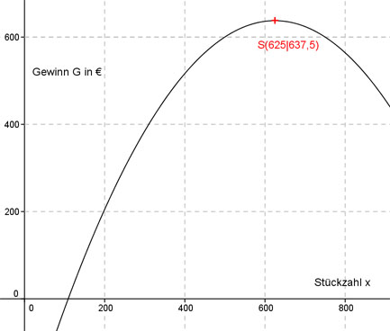

Aufgabe 126 Eine Firma hat bei der Herstellung eines Bauteils jeden Tag feste Kosten von 500 €, 10 € Material- und Lohnkosten pro Stück und weitere Stückkosten von 0,004 x2. Der Verkaufspreis beträgt 15 € pro Stück. Wie hoch ist der Tagesgewinn, wenn er mit 40% versteuert wird? Gewinn G = Erlös E - Kosten K Stückzahl sei x E
(x) = Verkaufspreis * Stückzahl = 15 * x K = variable Kosten 1 + variable Kosten 2 + feste Kosten Variable Kosten 1 = 10 * x (abhängig von der Stückzahl) Variable Kosten 2 = 0,004 * x2 (abhängig von der Stückzahl) Feste Kosten = 500 € Steuersatz 40% bedeutet, der Gewinn beträgt 60% entspricht dem Prozentfaktor 0,6. K(x) = 0,004 x2 + 10 x + 500 G(x) = 0,6 * 15 * x - (0,004x2 + 10x + 1 500) G(x) = 0,6 * (15 * x - 0,004x2 - 10x - 500) G(x) = 9x - 0,0024x2 - 6x - 300 G(x) = - 0,0024x2 + 3x - 300 Dies ist die Funktionsgleichung einer nach unten geöffneten, gestauchten Parabel, deren höchster Punkt der Scheitelpunkt ist. G(x) = - 0,0024x2 + 3x - 300 | :(-0,0024) G(x) - ---------- = x2 - 1 250x + 125 000 0,0024 Quadratische Ergänzung: G(x) - ---------- = x2 - 1 250x + 390 625 - 390 625 + 125 000 0,0024 mit x2 - 1 250x + 390 625 = (x - 625)2 G(x) - ---------- = (x - 625)2 - 265 625 |*(-0,0024) 0,0024 G(x) = -0,0024(x - 625)2 + 637,5 Scheitelpunkt abgelesen: S(625|637,5) Die Scheitelpunktkoordinaten bedeuten: Bei einer täglich verkauften Stückzahl x von 625 ist der versteuerte Gewinn G am größten und beträgt 637,5 €. 